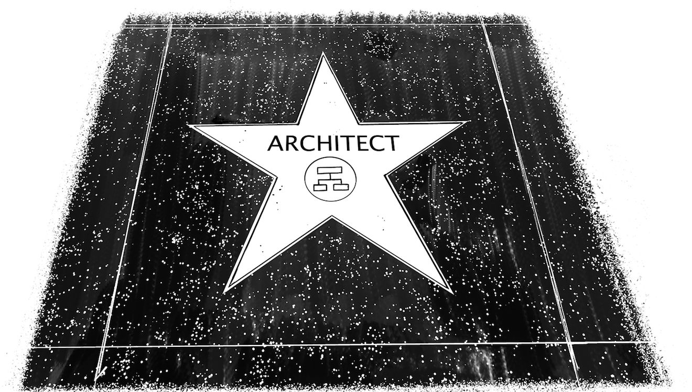

Most Architects Carry Multiple Personas

What should an architect be doing besides riding the elevator? Let’s try another analogy: movie characters.
Before the movie starts, you get to watch advertisements or short films. In our case, it’s a short film about the origin of the word architect: it derives from the Greek ἀρχιτέκτων (architekton), which roughly translates into “master builder.” Keeping in mind that this word was meant for people who built houses and structures, not IT systems, we should note that the word implies “builder,” not “designer”—an architect should be someone who actually builds, not someone who only draws pretty pictures. An architect is also expected to be accomplished in their profession as to deserve the attribute of being a “master.” Now to the main feature…
If you ask tech folk to name a prototypical architect in the movies, they’ll likely mention the The Matrix trilogy. The Architect of the Matrix is (per Wikipedia) a “cold, humorless, white-haired man in a light-gray suit,” qualities he largely owes to the fact that he is a computer program himself. Wikipedia also notes that the Architect “speaks in long logical chains of reasoning,” something that many IT architects are known to do. So perhaps the analogy holds?
Fun fact: Vint Cerf, one of the key architects of the internet, bears a remarkable resemblance to the Matrix Architect. Considering Vint designed much of the Matrix we live in, this might not be pure coincidence.
The Matrix Architect is also the ultimate authority: he designed the “Matrix” (the computer program that simulates reality to humans who are being farmed by machines as an energy source) and knows and controls everything. The enterprise architect is sometimes seen as such a person—the all-knowing decision maker. Some even wish themselves into such a role, partly because it is neat to be all-knowing and partly because it gets you a lot of respect.
Naturally, this role model has some issues: all-knowingness turns out to be a little too ambitious for humans, leading to poor decision-making and all sorts of other problems. Even if the architect is a super-smart person, they can base decisions on only those facts that are known to them. In large companies with a complex IT, it would be impossible to stay in touch with all technology that is in place, no matter how often they ride the elevator (Chapter 1) down to the engine room. They’ll therefore inevitably need to rely on presentations, documents, or statements from management on the middle floors. Such an information channel to the supreme decision maker has severe challenges: every floor through which such a document passes understands its value as an influencing vehicle. This means that the middle floors are tempted to inject their favorite messages and project proposals, often irrespective of any technical merit. Further up, any real technical content or potentially controversial topics are sure to be removed. As a result, the top architect is being fed indirect, distorted, and often biased information. Making decisions based on such information is dangerous.
I have observed senior management briefings in which the proposed solutions were rather a list of people’s favorite projects than actual solutions. Interestingly, and fortunately, despite having less IT experience, top management sensed that there was a missing link between the two.
In summary: corporate IT is no movie, and its role isn’t to provide an illusion for humans being farmed as power sources. We should be cautious with this architect model.
A slightly more fitting analogy for enterprise architects is that of a gardener. I tend to depict this metaphor with a character from one of my favorite movies, Edward Scissorhands. Large-scale IT is much like a garden: things evolve and grow on their own, with weeds growing the fastest. The role of the gardener is to trim and prune what doesn’t fit and to establish an overall balance and harmony in the garden, keeping in mind the plants’ needs. For example, shade-loving plants should be planted near large trees or bushes, just like automated testing and continuous integration (CI)/continuous development (CD) will be happier in the neighborhood of rapidly evolving systems.
A good gardener, just like a good architect, is no dictatorial master planner and certainly doesn’t make all the detailed decisions about which direction a strain of grass should grow—Japanese gardens being a possible exception. Rather, gardeners see themselves as the caretaker of a living ecosystem. Some gardeners, like Edward, are true artists!
I like this analogy because it has a soft touch to it. Complex enterprise IT does feel organic, and good architecture has a sense of balance, which we can often find in a nice garden. Top-down governance with weed killer is unlikely to have a lasting effect and usually does more harm than good. Whether this thinking leads to a new application for The Nature of Order,1 I am not sure yet. I should go read it.
Erik Dörnenburg, ThoughtWorks’ head of technology, Europe, introduced me to another very apt metaphor. Erik closely works with many software projects, which tend to loathe the ostensibly all-knowing, all-decision-making architect who is disconnected from reality. Erik even coined the term architecture without architects, which might cause some architects to worry about their career.
Erik likens an architect to a tour guide, someone who has been to a certain place many times, can tell a good story about it, and can gently guide you to pay attention to important aspects and avoid unnecessary risks. This is a guiding role: tour guides cannot force their guests to follow their advice, except maybe those who drop off a bus load of tourists at a tourist-trap restaurant in the middle of nowhere.
This type of architect needs to “lead by influence” and must be hands-on enough to earn the respect of those whom they’re leading. The tour guide also stays along for the ride and doesn’t just hand a map to the tourists like some consultant architects are known to do. An architect who acts as a guide often depends on strong management support because evidence that good things happened due to their guidance can be subtle. In purely “business case–driven” environments, this could be limiting the “tour guide” architect’s impact or career.
An unconventional guide out of another one of my favorite movies is the blind DJ Super Soul from the 1971 road movie Vanishing Point. Like so many IT projects, the movie’s protagonist, Kowalski, is on a death march to meet an impossible deadline and overcome numerous obstacles along the way. He isn’t delivering code, but a 1970 Dodge Challenger R/T 440 Magnum from Denver to San Francisco—in 15 hours. Kowalski is being guided by Super Soul who has tapped the police network, just like architects plugging into the management network, to get access to crucial information. The guide tracks Kowalski’s progress and keeps the hero clear of all sorts of traps that police (i.e., management) have set up. After Super Soul is compromised by “management,” the “project” goes adrift and ends like too many IT projects: in a fiery crash.
Architects can sometimes be seen as wizards who can solve just about any technical challenge. Although that can be a short-term ego boost, it’s not a good job description and expectation to live up to. Hence, by the “wizard” architect analogy, I don’t mean an actual wizard waving the magic wand but the “Mighty Oz”: a video projection that appears large and powerful but is in fact controlled by a mere human “wizard,” who turns out to be an ordinary man using the big machinery to garner respect.
A gentle dose of such engineered deception can be of use in large organizations in which “normal” developers are rarely involved in management discussions or major decisions. This is where the “architect” title can be used to make oneself a bit more “great and mighty.” The projection can garner the respect of the general population and can even be a precondition to taking the elevator to the top floors. Is this cheating? I would say “no” as long as you don’t get enamored in so much wizardry that you forget about your technical roots.
Similar to the wizard, a common expectation of an architect is that of the superhero: if you believe some job postings, enterprise architects can single-handedly catapult companies into the digital age, solve just about any technical problem, and are always up to date on the latest technology. These are tough expectations to fulfill, so I’d caution any architect against taking advantage of this common misconception.
Amir Shenhav from Intel appropriately pointed out that instead of the superhero we need “super glue” architects—the guys who hold architecture, technical details, business needs, and people together across a large organization or complex projects. I like this metaphor because it resembles the analogy of an architect being a catalyst. We just need to be a little careful: being the glue (or catalyst) means understanding a good bit about the things you glue together. It’s like being a good matchmaker: you need to find matching parts, and to do that you need to understand what your parts are made from.
Which type of architect should you be? First, there are likely many more types and movie analogies. You could play Inception and create architectural dream worlds with a (dangerous) twist. Or be one of the two impostors debating Chilean architecture in There’s Something about Mary or (more creepily) Anthony Royal in the utopian drama High-Rise—the opportunities are manifold.
In the end, most architects exhibit a combination of these prototypical stereotypes. Periodic gluing, gardening, guiding, impressing, and a little bit of all-knowing every now and then can make for a pretty good architect.
1 Christopher Alexander, The Nature of Order (Berkeley, CA: Center for Environmental Structure, 2002).